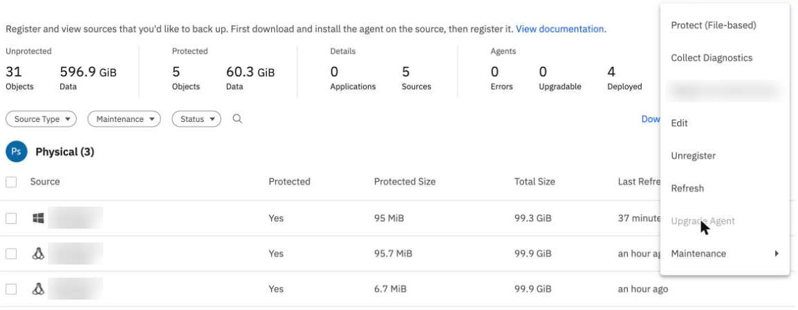
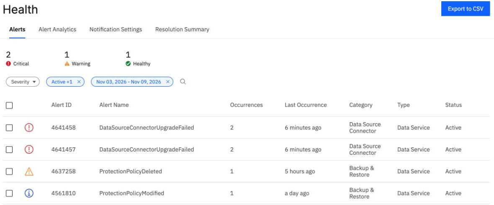

Agent upgrades
By the end you can say what an upgrade task did in our lab when every agent was already current, find the Upgradable count and the Upgrade Agent menu item in the BRS console, and read the alert BRS raised for connectors that could not upgrade.
Northgate Freight is a made-up company. It keeps the agents on ng-app-01 and its other servers current, and wants to know how an upgrade is made and what it looks like when one cannot happen.
Every number and screen in this unit comes from real runs in our lab, on 7 October and 9 November 2026, recorded in tutorials B7e and M1. Addresses were changed to made-up ones, and server names are blurred in the screenshots.
An upgrade for an agent that is already current
In our lab on 7 October 2026, all three agents were on version 7.3.12_release-20260713_2e7241a2, and BRS marked each kCurrent. Northgate made an upgrade task for one of them anyway, to start in 90 seconds with a window of 30 minutes.
What does the task do?
Show the answer
18:33:41 to 18:35:35 Scheduled 18:35:51 task Failed; agent Skipped
The task was made without error and ended in kIneligible: "The agent entity was marked nonupgradable." The agent process and its package did not change.
Why could the lab not test a real upgrade?
Show the answer
A new instance always gives the current agent. The tutorial marks a real upgrade as untested, and says to try it when IBM ships a new agent version: install the old one first, keep its installer, then make the task.
Make the task and watch it
Run each command in turn. The output is what our lab returned. The times are in microseconds, and the placeholders in angle brackets stand for values you would fill in.
ibmcloud backup-recovery agent-upgrade-task create --xibm-tenant-id $T --name b7e-test --description "BRS B7e test" --agent-ids <AGENT_ID> --schedule-time-usecs <NOW_PLUS_90S_USECS> --schedule-end-time-usecs <NOW_PLUS_30MIN_USECS>
Result: task 161892, status "Scheduled". The reply shows the name "create_upgrade_task" and the description "Selective agent upgrade via CreateUpgradeTask API", not the ones we gave (ISS-169).
The task is made and scheduled.
The reply shows other name and description than the ones given.
The task is scheduled to start in 90 seconds. What will the next command show about it?
Show the answer
Run the next command and read the lines.
ibmcloud backup-recovery agent-upgrade-task list --xibm-tenant-id $T --output json
18:33:41 to 18:35:35 Scheduled 18:35:51 task Failed; agent Skipped: kIneligible, "The agent entity was marked nonupgradable."
The start time was 18:34:50.
The check ran about a minute later.
The CLI has no list of agent versions. In our lab the version came from a REST call, not from the CLI.
Where the console offers an upgrade
These screens come from the BRS console in our lab on 9 November 2026. Both Linux servers ran cohesity-agent-7.3.13-1, the agent of the day. Click where you would click. After two misses the right place is marked.

On Data Protection > Sources, the Agents summary has three counts. Which one says how many agents could be upgraded?
Show where
Right. Upgradable is 0. The other two counts are 0 Errors and 4 Deployed.
Northgate opened a source's menu to start an upgrade. Which item is the upgrade, and is it usable?
Show where
Right. Upgrade Agent sits between Refresh and Maintenance, and it is greyed out, because no agent was older than the current one. The console can start an upgrade only when Upgradable is above 0. What Upgrade Agent does when it is active is untested.
Connectors that cannot upgrade
On 9 November 2026 Northgate moved files with IBM's Classic-to-VPC migration tool (unit 6.3). The backup and the restore worked. Then the console's Health page showed this.

Health, Alerts: 2 Critical, 1 Warning, 1 Healthy. Two critical alerts named DataSourceConnectorUpgradeFailed, 2 occurrences each, last seen 6 minutes ago, category Data Source Connector." width="1180" height="490">Which alerts are about a connector that could not upgrade?
Show where
Right. Two critical alerts named DataSourceConnectorUpgradeFailed, one for each of the tool's two connectors. They repeated every 15 minutes from 18:50 UTC.
What does the alert give as the reason?
Show the answer
"Not enough free disk space ... Required: 4518 MB, Available: 3990 MB." The tool's connector servers run release 7.2.18, from the tool's fixed connector version. BRS tries to upgrade them and fails.
Did the failed upgrade stop the migration's backup and restore?
Show the answer
The tutorial records the alerts as a result of the run and says the backup and the restore worked on 7.2.18. This is issue ISS-213 in our lab's list.
Three questions
The console shows 0 in Upgradable, and Upgrade Agent is greyed out. What does that tell you?
Show the answer
In our lab on 9 November 2026 the Agents summary showed 0 errors, 0 upgradable and 4 deployed, and Upgrade Agent was greyed because no agent was older than the current one.
A CLI upgrade task for an agent already on the newest version ends how?
Show the answer
The task was made and scheduled, then ended kIneligible. Nothing changed on the server.
Review from unit 6.1. After a Linux server reboots, which agent does not come back by itself?
Show the answer
The backup agent came back. The Connector Agent needed connector_agent.sh start.
You can read an upgrade screen
In our lab an upgrade task for a current agent was made, then failed by design with the agent skipped. The console starts an upgrade only when Upgradable is above 0. A real upgrade, a Windows agent upgrade and the Connector Agent are not covered by the tutorial.
Tutorial B7e makes and watches an upgrade task, from the command line and the console. The connector alerts are in tutorial M1.